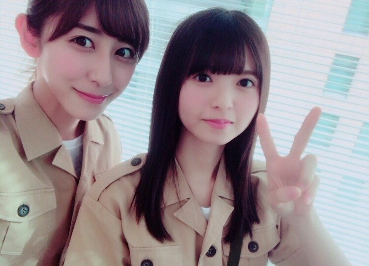
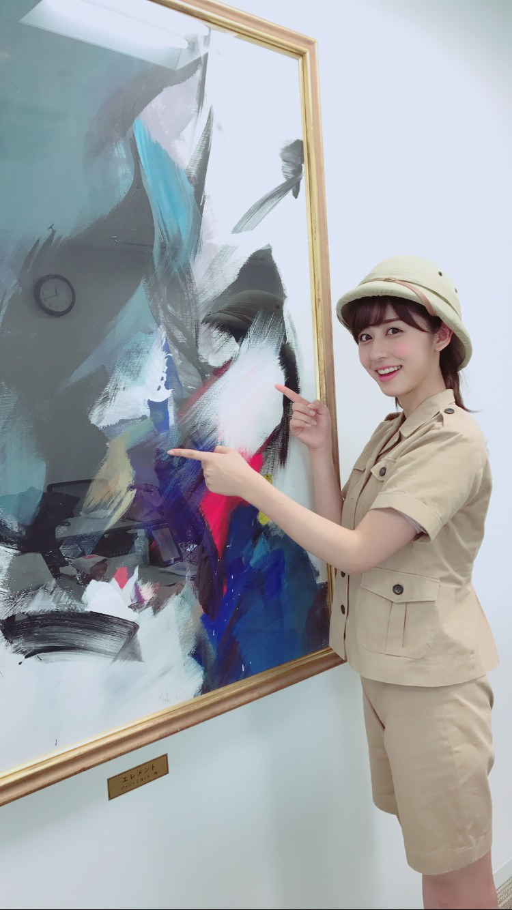

| 2016/12 27 Tue | ミステリーなハンター。 |
ちはるーむへようこそ。
NOGIBINGO!7を見てくださった皆さん
ありがとうございました！
とうとう最終回を迎えてしまいました(> <)
7!では今まで以上に
色々な企画にチャレンジさせて頂いて
本当に毎回ドキドキワクワクの
楽しい収録でした◎
そらジローも言ってくれていた通り
8!が出来たら嬉しいな〜( ¨̮ )
そして7!最終回には
やりたかった企画をやらせて頂きました！
ミステリーなハンター風に
ウユニ塩湖に行ってきました(?)

飛鳥と。
不思議、探検！

ウキウキだったので、
沢山写真撮ってしまいました(´>∀<｀)ゝ
まだ他にもあるので
モバメで送ろうかな♡
ちはるーむめいとの皆さん待っててね◎
いつか本当にミステリーハンターになって
本当にウユニ塩湖に行ってみたい。
小さい頃から不思議なことや
謎めいたこと、海外や歴史が大好きなんです。
(特にエジプトやミイラやピラミッドが好き)
(あとは恐竜も好き)
(もちろん化石も好き)
難しいのは分かっていますが...
ミステリーハンターになるという夢、
叶いますように(> <)！！！
--------------------------------♡
！ChihAnswer！
 かりはさん
かりはさん
・ちーちゃんの鍋のシメはなに？
→特にコレ！と決まったものはなくて、
斎藤家は鍋の種類によって
シメを変えています。
臨機応変！！
しいたけ「アルプス一万尺」さん
・ちはるって大学のレポートとかの課題って提出期限のどのくらい前に終わらせてますか？
→私はね、いつもどうしても
ギリギリになっちゃうの...
時間に追われた方が方が
何故かエンジンがかかるタイプみたい。
でも心の余裕が全くなくて
いつも焦っちゃうから(笑)
真似しちゃダメだよ〜(> <)
かわもとさん
・ちーちゃんの好きな芸人さんは誰かな？
→前にも答えたことあるかもしれないけど...！
ハライチさんの漫才が一番好きです。
じわじわ面白さがこみ上げてくるし、
何より澤部さんが大好きなんです◎
いつかお会いしたい！
そして最近ハマっているのは
おたまじゃくしさんの中西さん。
SNSに載せている"今日の一変化"が
本当に好き。
シュールでいつも笑わせてもらってます◎
122さん
・スポーツでは球技が好きなようですが、箱根駅伝はどうですか？母校を応援していますか、結果は気になりますか？
→箱根駅伝は毎年見てます！
お正月にお家でゴロゴロしながら見る
箱根駅伝は本当に最高。
大学に入る前は両親や祖父母の母校を
応援していたのですが
大学に入ってからはやはり私の母校を
応援してしまう！！
同世代の人が頑張る姿には
いつも勇気をもらえます。
頑張れ、明治！
もさくさん
・僕が大好きなオードリーさんは高校時代アメフトをやっていて番組も持ってますが、ちはるさんはオードリーさんとお会いした事はありますか？
→まだ一回もお会いした事無いんです...
ずっとお会いしてみたいな〜とは
思っているのですが...！
オードリーさんのNFL倶楽部にも
いつか出られたら夢のようです(> <)
アメフトや埼玉出身など
色々な共通点もあるのでいつか是非！
今日はここまで。
沢山質問してくださったのに
あまり答えられなくてすみません( ˟_˟ )
そして来年の目標や、今年の総括についての
質問をして下さった皆さん、
ありがとうございました！
特にこの２つについては
たくさん質問があったので、
その答えについてのブログは
後日ちゃんと書くつもりです◎
なので年末年始待っていてください！(> <)
--------------------------------♡
♬ ChihaMusic
「クリスマスソング」back numberさん
クリスマスは過ぎてしまったけど
冬に聞きたい曲。
今日もお店でかかっていて冬を感じました。
クリスマスの曲は楽しげなものが
多そうだけど、実は寂しい曲も沢山あって。
私は寂しい曲も好きです。
冬は一番好きな季節だけどそれは
寂しく切ない季節だからでもあるんだろうな〜
"できれば横にいて欲しくて
どこにも行って欲しくなくて
僕のことだけをずっと考えていて欲しい
やっぱりこんな事伝えたら格好悪いし
長くなるだけだからまとめるよ
君が好きだ
聞こえるまで何度だって言うよ
君が好きだ"
ラストのこの歌詞が大好き。
不器用ながらも真っ直ぐな思いが
きゅんとする。
昨日のブログの写真の奥にいたメンバーの
正解は！琴子でした〜♪
簡単すぎたかな？と思いきや
結構伊織と間違えてる方もいて、
問題出した側としては、
しめしめでした◎笑
にやり。
下半分みたいな顔よ。にやり。しめしめ。
おやすみ〜
斎藤ちはる
コメント(256)
2016/12/27 23:58